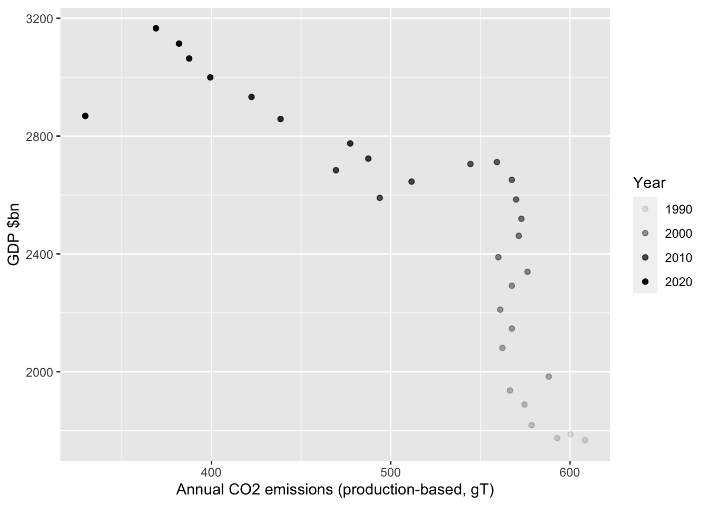
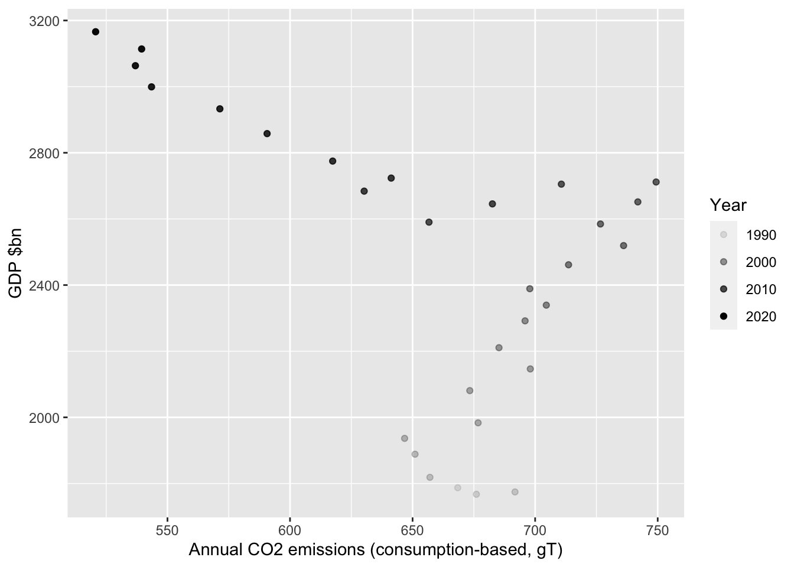
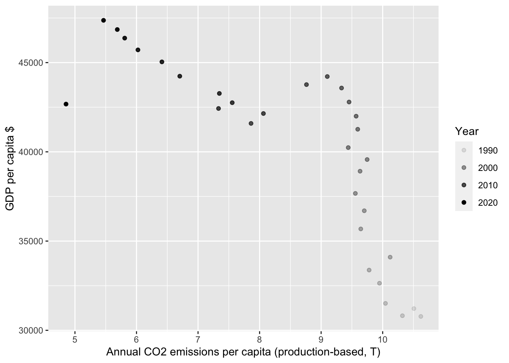
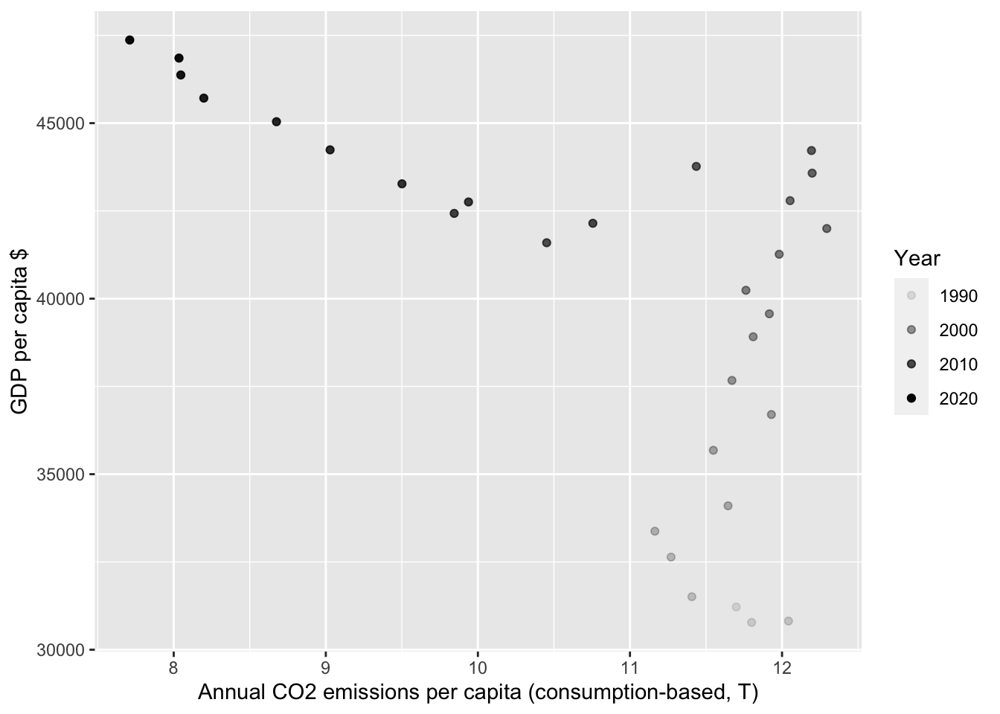

GDP & emissions - degrowthing or decoupling?
What’s all this about de-growth?
<sigh>
Data
Downloaded from the awesome OurWorldInData.
Code
dt_abs <- data.table::fread(here::here("data", "co2-emissions-and-gdp.csv"))
dt_pc <- data.table::fread(here::here("data", "co2-emissions-and-gdp-per-capita.csv"))UK: absolute GDP & emissions
First we’ll try production emissions @fig-ukPlotProd.
Code
plotDT <- dt_abs[Entity == "United Kingdom"]
ggplot2::ggplot(plotDT, aes(y = as.numeric(`GDP, PPP (constant 2017 international $)`)/1000000000,
x = as.numeric(`Annual CO2 emissions`)/1000000,
alpha = Year)) +
geom_point() +
labs(x = "Annual CO2 emissions (production-based, gT)",
y = "GDP $bn")
Next we’ll try consumption emissions @fig-ukPlotCons.
Note that 2020 consumption-based emissions data is missing so you don’t see the downtick
Code
plotDT <- dt_abs[Entity == "United Kingdom"]
ggplot2::ggplot(plotDT, aes(y = as.numeric(`GDP, PPP (constant 2017 international $)`)/1000000000,
x = as.numeric(`Annual consumption-based CO2 emissions`)/1000000,
alpha = Year)) +
geom_point() +
labs(x = "Annual CO2 emissions (consumption-based, gT)",
y = "GDP $bn")
UK: per capita GDP & emissions
Since we’ll be dividing everything pairwise by the same denominator, nothing much should change…
First we’ll try production emissions @fig-ukPlotProdPcc.
Code
plotDT <- dt_pc[Entity == "United Kingdom"]
ggplot2::ggplot(plotDT, aes(y = as.numeric(`GDP per capita, PPP (constant 2017 international $)`),
x = as.numeric(`Annual CO2 emissions (per capita)`),
alpha = Year)) +
geom_point() +
labs(x = "Annual CO2 emissions per capita (production-based, T)",
y = "GDP per capita $")
Next we’ll try consumption emissions @fig-ukPlotConsPcc.
Note that 2020 consumption-based emissions data is missing so you don’t see the downtick
Code
plotDT <- dt_pc[Entity == "United Kingdom"]
ggplot2::ggplot(plotDT, aes(y = as.numeric(`GDP per capita, PPP (constant 2017 international $)`),
x = as.numeric(`Annual consumption-based CO2 emissions (per capita)`),
alpha = Year)) +
geom_point() +
labs(x = "Annual CO2 emissions per capita (consumption-based, T)",
y = "GDP per capita $")
Data descriptions
Check
Skim the absolute data:
Code
skimr::skim(dt_abs)Warning: Couldn't find skimmers for class: integer64; No user-defined `sfl`
provided. Falling back to `character`.
Warning: Couldn't find skimmers for class: integer64; No user-defined `sfl`
provided. Falling back to `character`.| Name | dt_abs |
| Number of rows | 7795 |
| Number of columns | 6 |
| Key | NULL |
| _______________________ | |
| Column type frequency: | |
| character | 4 |
| numeric | 2 |
| ________________________ | |
| Group variables | None |
Variable type: character
| skim_variable | n_missing | complete_rate | min | max | empty | n_unique | whitespace |
|---|---|---|---|---|---|---|---|
| Entity | 0 | 1.00 | 4 | 32 | 0 | 255 | 0 |
| Code | 0 | 1.00 | 0 | 8 | 931 | 225 | 0 |
| Annual CO2 emissions | 479 | 0.94 | 1 | 21 | 0 | 6137 | 0 |
| GDP, PPP (constant 2017 international $) | 1626 | 0.79 | 1 | 21 | 0 | 6162 | 0 |
Variable type: numeric
| skim_variable | n_missing | complete_rate | mean | sd | p0 | p25 | p50 | p75 | p100 | hist |
|---|---|---|---|---|---|---|---|---|---|---|
| Year | 0 | 1.00 | 2005.06 | 8.930000e+00 | 1990.0 | 1997 | 2005 | 2013 | 2020 | ▇▇▇▇▇ |
| Annual consumption-based CO2 emissions | 3730 | 0.52 | 976326173.39 | 3.366486e+09 | 197201.7 | 10759533 | 59975059 | 290854945 | 36702502921 | ▇▁▁▁▁ |
Skim the per capita data
Code
skimr::skim(dt_pc)| Name | dt_pc |
| Number of rows | 7745 |
| Number of columns | 6 |
| Key | NULL |
| _______________________ | |
| Column type frequency: | |
| character | 2 |
| numeric | 4 |
| ________________________ | |
| Group variables | None |
Variable type: character
| skim_variable | n_missing | complete_rate | min | max | empty | n_unique | whitespace |
|---|---|---|---|---|---|---|---|
| Entity | 0 | 1 | 4 | 32 | 0 | 252 | 0 |
| Code | 0 | 1 | 0 | 8 | 899 | 224 | 0 |
Variable type: numeric
| skim_variable | n_missing | complete_rate | mean | sd | p0 | p25 | p50 | p75 | p100 | hist |
|---|---|---|---|---|---|---|---|---|---|---|
| Year | 0 | 1.00 | 2005.07 | 8.93 | 1990.00 | 1997.00 | 2005.00 | 2013.00 | 2020.00 | ▇▇▇▇▇ |
| GDP per capita, PPP (constant 2017 international $) | 1579 | 0.80 | 17879.29 | 20132.68 | 436.72 | 3678.83 | 10365.78 | 25832.03 | 161971.47 | ▇▂▁▁▁ |
| Annual consumption-based CO2 emissions (per capita) | 3680 | 0.52 | 6.53 | 6.92 | 0.05 | 1.19 | 4.30 | 9.89 | 57.79 | ▇▂▁▁▁ |
| Annual CO2 emissions (per capita) | 492 | 0.94 | 5.11 | 6.44 | 0.02 | 0.77 | 2.97 | 7.42 | 68.72 | ▇▁▁▁▁ |
Code
# hidden chunk